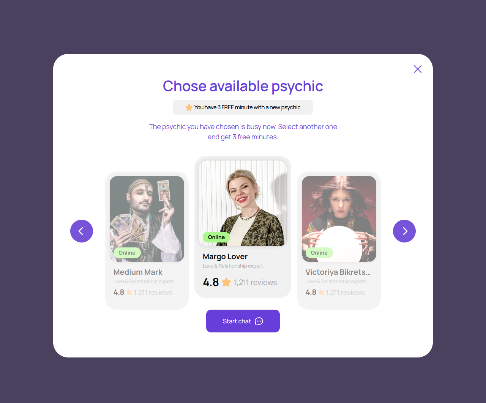
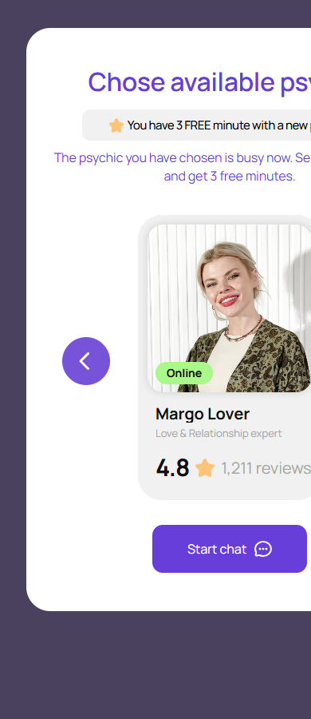

Эксперт для пробного периода
account/expert-picker-trial.html
Выбрать доступного эксперта, не расходуя бонус ожиданием.
| Когда открывается | Право на welcome bonus |
|---|---|
| Данные | Кандидаты; право/остаток бонуса; выбранный ID. |
| Сценарий | Выбор → Start chat → вопрос/согласие → оператор Start. |
| Переходы | Вопрос перед консультацией · Подключение |
П01: применять однократные 3 минуты к начатой консультации, а не всему бесплатному диалогу.
Общая и предметная логика. Снимки и подписи элементов — исходная редакция макета; поздние уточнения ТЗ имеют приоритет в своей области. Это не проверка текущего сайта.
Состояние 1280 · 1280 × 1062


Элементы и ожидаемые действия
| Элемент | Название в макете | Действие | Ожидаемый результат |
|---|---|---|---|
| E001 Виден | Close | Закрыть локальное окно или вернуться к инициатору; Stay отменяет намерение завершить. | Вернуть фокус и исходный контекст. Не выполнять оплату, удаление или Complete. При неизвестном результате платежа сначала сверить заказ. |
| E002 Виден | Previous expert | Показать предыдущий/следующий элемент соответствующей карусели. | Меняется только текущий элемент/позиция. Эксперт не считается выбранным автоматически. |
| E003 Виден | Online Medium Mark Love & Relationship expert 4.8 1,211 reviews | Явно выбрать конкретного эксперта или открыть его подробности. | Сохранить ID и показать выбранное состояние; Next/Start остаются отдельным действием. |
| E004 Виден | Online Margo Lover Love & Relationship expert 4.8 1,211 reviews | Явно выбрать конкретного эксперта или открыть его подробности. | Сохранить ID и показать выбранное состояние; Next/Start остаются отдельным действием. |
| E005 Виден | Online Victoriya Bikrets… Love & Relationship expert 4.8 1,211 reviews | Явно выбрать конкретного эксперта или открыть его подробности. | Сохранить ID и показать выбранное состояние; Next/Start остаются отдельным действием. |
| E006 Виден | Next expert | Показать предыдущий/следующий элемент соответствующей карусели. | Меняется только текущий элемент/позиция. Эксперт не считается выбранным автоматически. |
| E007 Виден | Start chat | Продолжить сценарий «Эксперт для пробного периода»: Выбор → Start chat → вопрос/согласие → оператор Start. | Сохраняются expertId/dialogId; вопрос, согласие, funding и operator Start не объединяются. Нажатие само не запускает платное время. |
Состояние 390 · 390 × 900


Элементы и ожидаемые действия
| Элемент | Название в макете | Действие | Ожидаемый результат |
|---|---|---|---|
| E001 Виден | Close | Закрыть локальное окно или вернуться к инициатору; Stay отменяет намерение завершить. | Вернуть фокус и исходный контекст. Не выполнять оплату, удаление или Complete. При неизвестном результате платежа сначала сверить заказ. |
| E002 Виден | Previous expert | Показать предыдущий/следующий элемент соответствующей карусели. | Меняется только текущий элемент/позиция. Эксперт не считается выбранным автоматически. |
| E003 Скрыт в этом состоянии | Online Medium MarkLove & Relationship expert4.81,211 reviews | Явно выбрать конкретного эксперта или открыть его подробности. | Сохранить ID и показать выбранное состояние; Next/Start остаются отдельным действием. |
| E004 Виден | Online Margo Lover Love & Relationship expert 4.8 1,211 reviews | Явно выбрать конкретного эксперта или открыть его подробности. | Сохранить ID и показать выбранное состояние; Next/Start остаются отдельным действием. |
| E005 Скрыт в этом состоянии | Online Victoriya Bikrets…Love & Relationship expert4.81,211 reviews | Явно выбрать конкретного эксперта или открыть его подробности. | Сохранить ID и показать выбранное состояние; Next/Start остаются отдельным действием. |
| E006 Виден | Next expert | Показать предыдущий/следующий элемент соответствующей карусели. | Меняется только текущий элемент/позиция. Эксперт не считается выбранным автоматически. |
| E007 Виден | Start chat | Продолжить сценарий «Эксперт для пробного периода»: Выбор → Start chat → вопрос/согласие → оператор Start. | Сохраняются expertId/dialogId; вопрос, согласие, funding и operator Start не объединяются. Нажатие само не запускает платное время. |